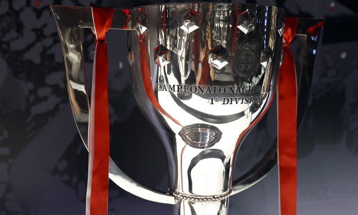

TERCER MAXIMO GANADOR.El Atletico de Madrid, fundado en 1903, es un destacado club de futbol con sede en Madrid, Espana. Conocido por su estilo de juego aguerrido y competitivo, el equipo ha ganado multiples titulos nacionales e internacionales, desafiando a los gigantes tradicionales como el Real Madrid y el FC Barcelona. Su estadio, el Wanda Metropolitano, es un simbolo de la pasion y el compromiso de sus seguidores. DE LA COMPETICION:
ATLETICO DE MADRID ( 11 Ligas)
A continuacion, los anos en los que el equipo colchnero salió campeon de la competencia:
1939-40, 1940-41, 1949-50, 1950-51, 1965-66, 1969-70, 1972-73, 1976-77, 1995-96, 2013-14 y 2020-21
Los Jugadores con mas TITULOS de esta competicion son:
|

Pulsa para volver al inicio.